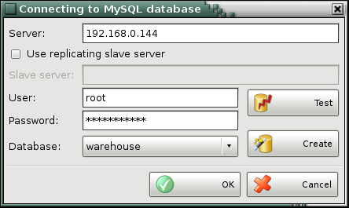
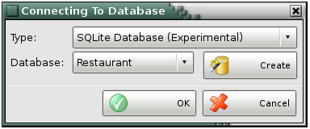
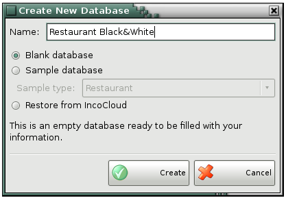
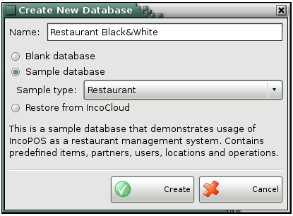
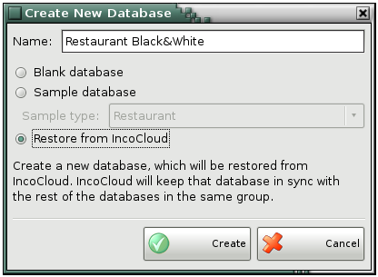

Connecting to MySQL Database
Use the Connecting to MySQL Database window to change the active company. This feature allows you to change the company you are working with and load data and operations of another company. Generally, each database contains data of a single company, thus changing the database changes the active company.

The text field Server contains the location of the database server (IP address or machine name) to be used. In the User and Password fields fill in the corresponding username and password for server access. The drop-down list Database contains all databases on the selected server.
Click the Test button to test the connection with the server and to check whether the selected database is valid and can be loaded.
To create a new database, make sure you are connected to the server, type the name of the new database in the Database field and click the Create button.
Connecting to SQLite Database (Experimental)

The Create button opens a window to creat a new base. There are an opportunity for blank datebase, sample datebase and restor from IncoCloud.
Creat a Blank datebase:

Creat a Sample database:

Restor from IncoCloud:

�2006-2015 Microinvest, All rights reserved